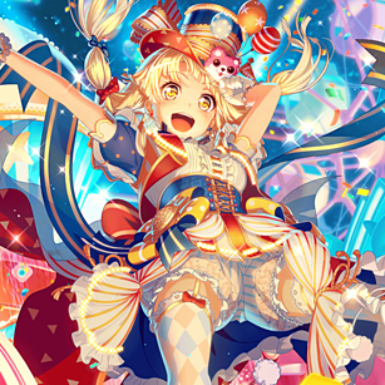

家部チャンネル「ディヴィジョン」 家部チャンネルをもっと見たい方 >もっと見る 家虎部とは  2019年6月17日に発足された女子禁制のむさくるしい団体。 元々はガルパが接点ではあったものの今ではその影もなく雑談したり遊んだりする団体となっている。これからは世界にも目を向けるためこのオフィシャルサイトが開設されることとなった。 家虎部のリーダーまがん。この名が世界に轟くのも時間の問題だろう。 >もっと見る Official Twitter